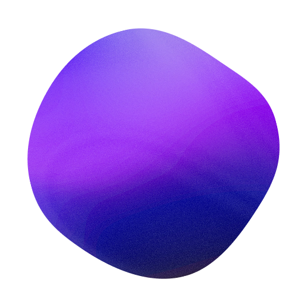

Design System v2 da Dinn
Um sistema para o site, a plataforma e os vídeos. Uma marca, uma linguagem, um movimento.
Fonte: rules/DESIGN_SYSTEM_V2.md (site, branch redesign), rules/charts-tokens.css, skill motion-de-produto e o vídeo V7.1 (79 s). Atualizado em 16/11/2026.
Nove princípios
Valem para o site, o app e o vídeo. Quando uma tela duvida, volta aqui.
- 1. Menos é maisUma ideia por seção. Título curto, uma frase de apoio, uma ação.
- 2. Imagem manda, texto apoiaMostre o produto. O texto fica curto e cinza.
- 3. Uma cor de títuloTodo título usa
--foreground. Sem destaque roxo e sem duas cores. - 4. Botão com texto brancoNunca preto sobre roxo. Nunca roxo e preto juntos no mesmo botão.
- 5. Branco sobre corFundo com degradê ou foto leva camada escura de 35 a 70 % e texto branco.
- 6. Sem tag de statusNada de "Beta", "Novo" ou "Em breve" na interface do site.
- 7. Cor só no conteúdoA interface é neutra. A cor vem dos degradês e do botão principal.
- 8. RespiroSeções com muito espaço. Nada encostado.
- 9. Texto em STEASD-STE100: frase curta, voz ativa, um termo por conceito.
Cores e tokens
Use sempre o token, nunca o hex solto. Clique em uma cor para copiar o valor.
Tema (shadcn, preset b1hriBA3cW)
Texto sobre --primary e sobre imagem escura é sempre #fff. Derivados do roxo só por color-mix com transparência. Aliases antigos (--bg-page, --text-primary, --brand) funcionam, mas não entram em código novo.
Paleta da marca (identidade, seção 10.1)
Proporção de cor em tela e no vídeo: base neutra acima de 90 %, roxo abaixo de 10 %, limão e laranja só em pontos pequenos.
--primary do site vale hoje #7008E7 (oklch 0,491 0,27 292,6). A referência da marca é #5130E9. O vídeo V7 usa #5130E9, por decisão do owner. O Design System do app fixa #5625F2. Trocar o token muda o site inteiro. A decisão é do Renan.
Cores de gráfico (rules/charts-tokens.css)
Cores de status do produto
Verde, amarelo, vermelho e cinza são do produto. Entram só dentro da tela real do Dinn, nunca como cor de marca.
Contraste
Lilás, lime e laranja ficam abaixo de 3:1 no branco. Use em preenchimento, com legenda ou rótulo ao lado. Linha fina usa --chart-2-line e --chart-5-line. Texto de eixo e legenda usa cinza ou preto, nunca a cor da série. Meta mínima de texto: WCAG AA (4,5:1).
Tipografia
Roboto nos títulos, peso 400, tracking negativo. Inter no texto e na interface.
clamp(36px, 5vw, 76px)entrelinha 1,04 · até 3 linhas
clamp(30px, 3.4vw, 48px)entrelinha 1,1
17 a 22 px · peso 500
16 px ·
--muted-foreground · até 46 ch14 a 15 px
Roboto 400 ·
tabular-numsRegras: título alinhado à esquerda, em uma cor só. O destaque *assim* dos dicionários não muda cor, peso nem estilo. Rótulos em caixa normal, sem eyebrow em caixa alta e sem numeração decorativa. Corpo a partir de 16 px. Britti Sans foi removida do site em 12/11/2026.
Escala no vídeo (1920 × 1080)
| Elemento | Tamanho | Regra |
|---|---|---|
| Título de cena | 72 a 120 px (vertical) · cerca de 80 px no horizontal do V7 | Roboto 400, 3 a 5 palavras, no máximo 7 |
| Número em destaque | cerca de 210 px | Roboto 400, tabular-nums, termina no valor exato |
| Legenda queimada | 38 px · peso 500 | Inter, fundo rgba(8,9,10,.78), raio 18 px, até 7 palavras por bloco |
| Texto mínimo | 28 px (horizontal) · 40 px (vertical) | Leitura no celular |
| Tempo de leitura | 0,6 s + 0,28 s por palavra | Título de 5 palavras fica 2,0 s na tela |
Layout, raio e espaço
Container largo, seções com respiro, fundo alternado.
.h2-wrapLargura máxima 1472 px. Lateral clamp(24px, 4vw, 56px).
.h2-sectionPadding vertical clamp(72px, 9vw, 120px). Alterne --background e --muted.
.h2-headTítulo e ação. Use .is-stack para título e subtítulo. Não centralize.
Raios
Espaçamento (escala de 4 px)
Responsivo
| Ponto | Comportamento |
|---|---|
| ≤ 1024 px | Hero em 1 coluna. Grades em 2 colunas. Índice lateral some abaixo de 1100 px. |
| ≤ 640 px | 1 coluna. Setas de carrossel somem (rolagem por toque). Blocos vazios do showcase somem. |
| Chat | Largura min(400px, 100vw − 32px), altura min(620px, 100dvh − 96px). |
| Movimento | Respeite prefers-reduced-motion: mostre só o estado final. |
Biblioteca de degradês
Os degradês dão a cor da marca. Texto branco só sobre degradê escuro com camada de 30 a 45 %.
Originais public/gradients/g00…g11
Cópias web de 1920 px public/gradients/web/
Não use os *-unsplash.avif da pasta raiz. Eles pesam até 4 MB. Use sempre as cópias web.
Camada escura sob texto
Gradiente por página (seção 6.1)
| Página | Degradê | Reação |
|---|
Para texto escuro (fechamento, cartão claro) use g10, g03 ou lilas-azul. Para texto branco use os *-noite e grafite.
Componentes base
Poucos, simples e iguais em todas as páginas.
Botão e link
Primário: fundo --primary, texto #fff, formato pílula, 13 a 16 px, peso 600. Todo botão de entrada leva a /contato. A Dinn é B2B enterprise: não linke login nem app.dinn.ai. Clique em um botão para ver o aperto de 0,12 s.
Abas, filtro e chip
Aba: pílula com borda --border, ativa com fundo --background e sombra leve. Filtro e chip ativo: roxo com texto branco, nunca preto.
Cards
Chat flutuante (substitui FAQ)
Mensagem do bot: fundo --muted, raio 16 (canto superior esquerdo 4). Mensagem da pessoa: roxo com texto branco. Chip de pergunta: pílula de raio 16 com borda.
Colunas com fio fino
Itens paralelos (planos, tipos de sinal) ficam em colunas separadas por fio de 1 px. No celular viram cartões.
Índice da página
Traços fixos na borda direita desta página. O da seção atual fica maior e roxo. O nome aparece ao passar o mouse. Use em páginas com 4 ou mais seções. Some abaixo de 1100 px.
Padrões de seção
Copie um destes. Se faltar, crie na mesma linguagem e registre aqui.
--muted.Telas animadas do produto
Toda tela do produto no site usa ProductScreen com uma tela de FEATURE_DEMO ou AREA_DEMO. A janela vaza para a direita e para baixo, com o canto superior esquerdo arredondado, sobre um degradê escuro. As telas vêm do app real, com dados fictícios, dado de ontem (D-1) e a legenda "Dados e nomes ilustrativos". Nunca desenhe elemento que não existe no produto. Sem anel nem contorno roxo no passo ativo: o cursor aponta o alvo.
Ilustração em linha
Desenho isométrico de 1 px. Um único detalhe em roxo. Movimento só no hover.
- Linha de 1 px que não engrossa com a escala (
vector-effect: non-scaling-stroke). - Faces na cor do fundo (
--background), traço em--foreground, guias pontilhadas. - Um único detalhe em
--primary. Linha cheia é dado direto. Linha tracejada é estimado ou inferido. - Proporção 1,44:1. Cada peça define o seu
viewBoxcom 20 % de folga. - Movimento só no hover do cartão (
.il-host). Respeitaprefers-reduced-motion..is-hoverforça o estado em teste e toque. - Desenhe do mais longe (x + y menor) para o mais perto, com
Box,Line3ePoly3desrc/components/illustrations/iso.tsx.
Peças atuais: Recursos (IlBlog, IlCases, IlChangelog, IlLayers), Pesquisas, Planos, Confiança, Sobre e as seis áreas da home (Pricing, Trade, Supply, SAC, Lançamento, Governança). O ícone do Dinn é sempre o DinnOrb, a grade de pontos que pulsa.
Gráficos
Curvas e cantos redondos. Cor e traço identificam o produto. O roxo manda.
Biblioteca completa de 22 gráficos em rules/biblioteca-graficos.html. Abaixo, os cinco padrões mais usados, com dados de exemplo.
Comparador de séries (opção A)
% de ruptura, últimos 14 dias · dados de exemplo
Barras em pílula
Itens comparados. Cor segue a série, nunca o ranking.
Rosca
Parte do todo. Arco com ponta redonda.
Indicadores
Um cartão em destaque por tela. Roxo: roxo-noite, texto branco, selo lime. Lime: g10, texto preto, selo preto. Laranja: pessego. Roxo escuro: roxo-noite, parte escura.
Esferas
Regras
- Ordem fixa das séries: roxo, lilás, preto, lime, laranja. Mais de cinco viram "Outros".
- Cor e traço identificam o produto: roxo contínuo, laranja tracejado. O gráfico não depende só de cor.
- A média da carteira é pontilhada e fica sempre visível. Não existe botão para ocultar.
- Só a série em foco recebe preenchimento, com linhas verticais que somem para baixo.
- Linha de 2,5 px com ponta redonda. Barra com topo arredondado ou pílula. Grade leve.
- Tooltip branco no tema claro e escuro no tema escuro. Raio 14 px, borda fina, sombra suave. Cada linha mostra a diferença contra a média.
- Não escreva número em todo ponto. Rotule a ponta da linha ou o item em destaque.
- Com duas séries ou mais, mostre legenda de botões com
aria-pressed. - Acessibilidade:
aria-labelcom o último ponto, setas percorrem os dias,Escfecha o tooltip, botão "Table view" e resumo em texto. - Movimento: linhas se desenham, barras crescem, uma vez só, em menos de 1,2 s.
No código: ChartKit.tsx (SVG puro), site-charts.css e charts-tokens.css. O porte para ChartContainer do shadcn (Recharts) ainda não foi feito.
Movimento
Cada adjetivo vira número. Mesma linguagem no site e no vídeo (skill motion-de-produto).
Curvas
Número, dado e gráfico nunca usam mola. Use outExpo. Linear só em laço contínuo (rotação, grão).
Tempos de referência
Revelação padrão
0,6 s · 18 quadros · outExpo
Contador de número
0,8 a 1,4 s · outExpo · termina no valor exato e segura 1 s
Lista escalonada
- Rede Alfa Bela Vista
- Rede Alfa Moema
- Rede Alfa Pinheiros
- Rede Alfa Santana
60 a 100 ms entre itens · até 5 itens
Chip que pousa
0,3 s · mola do DS (0,175, 0,885, 0,32, 1,275)
Digitação
18 a 28 caracteres por segundo · cursor pisca em ciclo de 1,06 s
Deriva de câmera
Escala de 1,00 a 1,035 (vídeo: até 1,04). A câmera nunca para.
Clique
Aperta e solta em 0,12 s, escala 0,94 a 1,00
Corte em movimento
A tela velha sobe e desfoca (0,45 s). A nova sobe do desfoque (0,9 s).
Tela do produto com cursor em arco
- Câmera por planos. Abre a tela inteira por 1 a 2 s. Depois vai à região em 0,6 a 0,9 s, curva
inOut. - Cursor em arco de 0,45 a 0,8 s. A ponta fica no ponto clicado. Seta clássica de 30 px.
- Clique aperta e solta, com anel no alvo (
demo-ripple). Nunca umscaleno cursor. - Números e gráficos em
outExpo. Menus, janelas e pinos entram com a mola do DS. - Com "reduzir movimento" ligado, mostre só o estado final.
Tabela de números
| Elemento | Duração | Quadros a 30 fps |
|---|---|---|
| Entrada de chip ou cartão pequeno | 0,2 a 0,3 s | 6 a 9 |
| Painel lateral entra | 0,3 a 0,45 s | 9 a 14 |
| Zoom à região da interface | 0,6 a 0,9 s | 18 a 27 |
| Cursor de um ponto a outro | 0,5 a 0,8 s | 15 a 24 |
| Resposta da tela após o clique | 0,1 a 0,25 s | 3 a 8 |
| Barra ou linha de gráfico cresce | 0,6 a 0,9 s | 18 a 27 |
| Linha SVG se desenha | 0,5 a 1,0 s | 15 a 30 |
| Respiro depois do resultado principal | mínimo 1,0 s | 30 |
| Logo final sozinho, só com a música | 1,4 s | 42 |
Vídeo institucional V7
"Um dia com o Dinn". Mesma marca do site, no formato de vídeo. Versão atual no herói da home: V7.1, 79 s.
Promessa. Palco roxo-noite com grão, título Roboto 400 e legenda queimada palavra a palavra.
Número vira gesto. Contador em outExpo até o valor exato. Pontos lime marcam o pico.
Recorte a interface. A janela branca flutua sobre o degradê. Fonte e frescor do dado ficam visíveis.
Fechamento. Logo escuro sozinho sobre branco, 1,4 s, só com a música.
Ficha de linguagem de movimento
| Decisão | Valor na Dinn |
|---|---|
| Formato | 1920 × 1080, 30 fps. Vertical: 1080 × 1920. |
| Área segura | Elementos em 90 %. Texto-chave em 80 %. |
| Mundo | Degradê do site (web/roxo-noite e outros) ou fundo neutro limpo. Grão fino de 4 a 8 % em fundo escuro. |
| Cadência | Interface em todos os quadros (30). Sem "em dois" sem decisão do Alex. |
| Corte | 1 a cada 2,5 a 4 s. Virada de ato na pausa da voz. Corte seco, em movimento, sem dissolução. |
| Câmera | Deriva de 1,00 a 1,04. Zoom à região em 0,6 a 0,9 s. |
| Tipografia | Roboto 400 no título, 3 a 5 palavras. Inter no texto. |
| Cor | Neutro acima de 90 %. Roxo abaixo de 10 %. Limão e laranja só nos picos. |
| Transição | 0,2 a 0,4 s, com os easings do Design System. Cena nova entra 0,4 s sobre a anterior. |
| Som | Mapa de emoção. Música 10 dB abaixo da voz. Ataque até 0,3 s depois do corte. |
| Tempo | Um timeline.json único alimenta animação e som. |
Janela do produto dentro do vídeo
Menu lateral de 256 px, barra do topo de 64 px. Fundo #FFFFFF, superfície #F4F4F5, borda #E4E4E7, texto #18181B.
#5130E9, suave #F1EEFE, borda #CFC6FA. O vídeo usa um roxo só.
"Dados e nomes ilustrativos." Dado com data (D-1) e marca de observado ou estimado.
Regras do vídeo
- Uma promessa por vídeo, em até 12 palavras. Toda cena a prova ou sai.
- Mostre o mecanismo. Cada cena tem ação, resposta e resultado.
- Um foco por vez. No máximo um elemento novo por batida. Lista entra com 60 a 100 ms de intervalo, até 5 itens.
- Prova com cena específica: uma pessoa, uma tarefa, um resultado, com o papel confirmado no brief.
- Mostre a fonte e o frescor do dado. D-1, nunca "tempo real".
- Código anima, imagem real mostra. Pessoa e ambiente são filmagem real. Tela de produto nunca sai de IA.
- Efeito 3D, malha de gradiente, esfera flutuante, cérebro digital, circuito azul, robô ou mascote.
- Função não lançada mostrada como pronta. Número inventado em tela.
- Logo, nome ou embalagem de terceiro sem autorização registrada.
- Pessoa posada olhando para a lente. Equipe aplaudindo em volta do notebook.
- Dissolução entre cenas. Cena sem mudança por mais de 2 s.
- Texto branco sem camada escura sobre degradê claro. Contraste abaixo de 4,5:1.
Logo e marca
Logo escuro sobre fundo claro. Logo claro sobre fundo escuro.
28 px de altura
30 px de altura
26 px de altura

favicon 64 e 32 px
Use os PNGs de public/logo/ (8 KB). Os SVGs novos têm 12 MB, com imagem embutida: não use no site. No vídeo, use o SVG oficial. Nunca recolora, gire ou estique o logo. Dentro da tela do produto, o vídeo mostra o logo antigo do app, porque é o que o produto mostra hoje.
Texto, regras e checklist
Todo texto de interface, site e vídeo segue o ASD-STE100.
Texto em STE
- Frase curta: até 20 palavras em instrução e 25 em descrição. Um assunto por frase.
- Voz ativa e tempo simples. Verbos concretos: use, mostre, envie, veja.
- Um termo por conceito: signal, stock-out, sell-through, coverage, source, refresh.
- Título com até 8 palavras. Botão com 1 a 3 palavras, verbo no início.
- Sem adjetivo de vendedor, sem metáfora, sem "tempo real" sem dado.
- EN primeiro. PT e ES com a mesma estrutura e o mesmo tamanho.
O que não fazer
- Hero escuro com cena animada que não vem do produto.
- Borda pesada, sombra forte, selo, texto longo ao lado de imagem.
- Duas cores no mesmo título. Destaque roxo em palavra.
- Botão com texto preto. Texto branco sobre fundo claro.
- Hex solto no código. Britti Sans. Tag "Beta", "Novo", "Em breve".
- Selo de piloto ou de teste: tudo no site é apresentado como entregue.
Checklist antes de entregar uma tela
- Título em 1 cor, até 3 linhas no hero.
- Botões com texto branco.
- Texto branco só sobre fundo escuro ou camada escura.
- Nenhuma tag de status.
- Tokens do tema, sem hex solto.
- Texto em STE nos 3 idiomas (EN, PT, ES).
- Desktop, tablet e mobile conferidos.
- Movimento respeita "reduzir movimento".
pnpm buildpassa.- Vídeo: cada elemento tem origem declarada (código, filmagem ou Alex) e a revisão de movimento tem prova em número ou quadro.